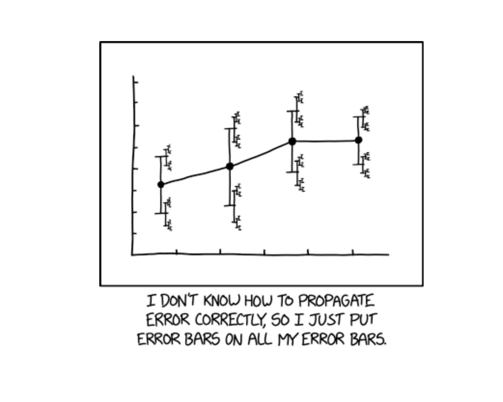
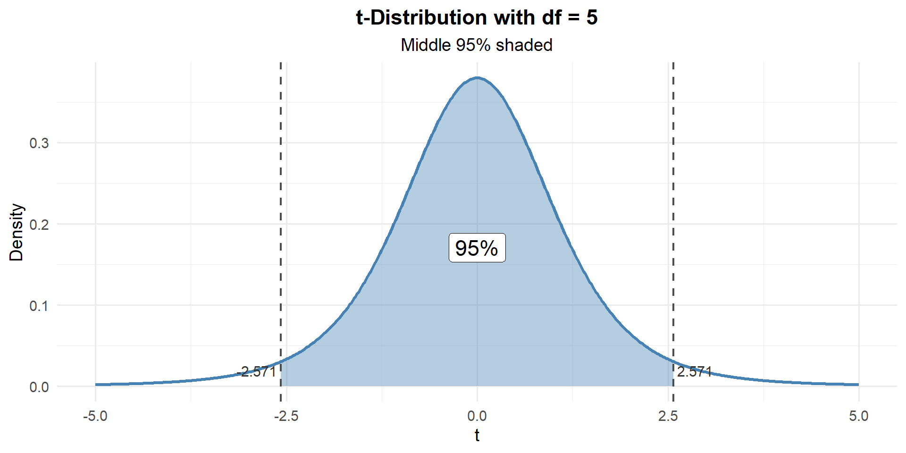
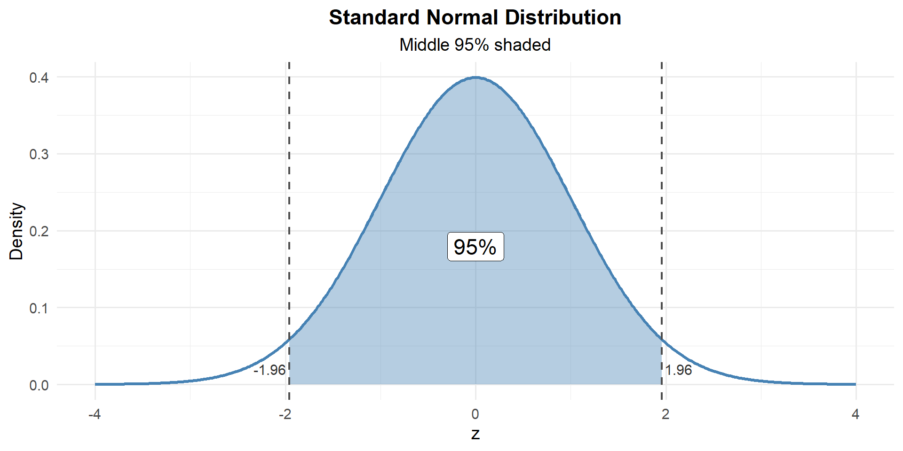
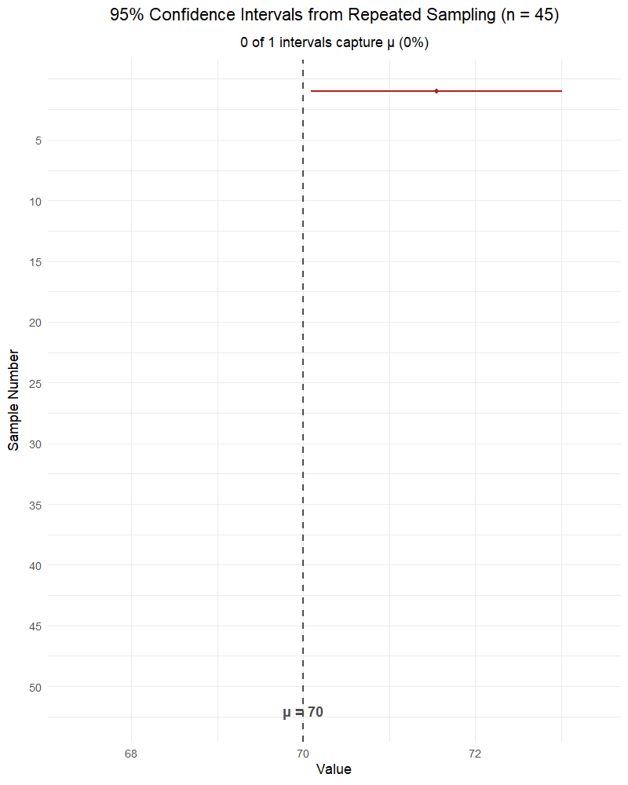

Lesson 19: Confidence Intervals II

What We Did: Lessons 17–18
NoteLesson 17: Central Limit Theorem
The Central Limit Theorem (CLT): If \(X_1, X_2, \ldots, X_n\) are independent and identically distributed (iid) with mean \(\mu\) and standard deviation \(\sigma\), then for large \(n\):
\[\bar{X} \sim N\left(\mu, \frac{\sigma^2}{n}\right)\]
Standard Error of the Mean: \[\sigma_{\bar{X}} = \frac{\sigma}{\sqrt{n}}\]
When is \(n\) “large enough”?
- If the population is normal: CLT works for any \(n\)
- Otherwise: \(n \geq 30\) is the common rule of thumb
To compute probabilities:
- Identify \(\mu\) and \(\sigma\)
- Compute the standard error: \(SE = \sigma / \sqrt{n}\)
- Use
pnorm()with the appropriate mean and SD (the SE)
NoteLesson 18: Confidence Intervals I
Confidence Interval for a Mean:
| Formula | When to Use | |
|---|---|---|
| Large sample (\(n \geq 30\)) | \(\bar{X} \pm z_{\alpha/2} \cdot \dfrac{\sigma}{\sqrt{n}}\) | Random sample, independence, \(s \approx \sigma\) |
| Small sample (\(n < 30\)) | \(\bar{X} \pm t_{\alpha/2, n-1} \cdot \dfrac{s}{\sqrt{n}}\) | Random sample, independence |
Key ideas:
- Margin of error: \(E = z_{\alpha/2} \cdot \frac{s}{\sqrt{n}}\) (or \(t_{\alpha/2, n-1} \cdot \frac{s}{\sqrt{n}}\))
- Higher confidence level → wider interval
- Larger sample size → narrower interval
- Interpretation: “We are C% confident that the interval captures the true mean \(\mu\).”
What We’re Doing: Lesson 19
Objectives
- Interpret CIs correctly in context
- Construct confidence intervals for proportions
- Assess robustness of CI assumptions
Required Reading
Devore, Section 7.3
Break!
Let’s talk Artificial Intelligence and what it can do for you.
Last Lesson’s Takeaway: Confidence Intervals I
ImportantThe Big Picture from Lesson 18
We learned how to construct confidence intervals — both \(z\)-intervals and \(t\)-intervals. Today we focus on three things:
- Interpreting CIs correctly (what they mean and what they DON’T mean)
- Confidence intervals for proportions (\(\hat{p}\) instead of \(\bar{X}\))
- Robustness of CI assumptions
Quick Review: The \(t\)-Distribution
Last lesson we introduced the \(t\)-distribution. Let’s make sure we’re comfortable with it before moving on.
Why do we need the \(t\)-distribution?
When \(n\) is large (\(n \geq 30\)), \(s \approx \sigma\) and we can use the \(z\)-interval:
\[\bar{X} \pm z_{\alpha/2} \cdot \frac{\sigma}{\sqrt{n}}\]
But when \(n\) is small, \(s\) is a less reliable estimate of \(\sigma\) — this introduces extra uncertainty the \(z\)-interval doesn’t account for.
The \(t\)-distribution has heavier tails to account for that extra uncertainty:
\[T = \frac{\bar{X} - \mu}{s / \sqrt{n}} \sim t_{n-1}\]

Key properties:
- Symmetric and bell-shaped, centered at 0
- Heavier tails than the normal → wider intervals for small samples
- Degrees of freedom: \(\nu = n - 1\)
- As \(df \to \infty\), \(t \to N(0, 1)\) — which is why \(z\) works for large \(n\)
# Compare critical values: t* gets closer to z* as df increases
qt(0.975, df = 4) # n = 5[1] 2.776445qt(0.975, df = 10) # n = 11[1] 2.228139qt(0.975, df = 30) # n = 31[1] 2.042272qnorm(0.975) # z* (the limit)[1] 1.959964Example: Cadet Push-Up Scores
A random sample of \(n = 6\) cadets records the following push-up counts on the ACFT:
\[62, \; 55, \; 71, \; 48, \; 59, \; 65\]
Construct a 95% confidence interval for the true mean push-up score.
\[\bar{x} = \frac{62 + 55 + 71 + 48 + 59 + 65}{6} = \frac{360}{6} = 60\]
\[s = \sqrt{\frac{\sum(x_i - \bar{x})^2}{n-1}} = \sqrt{\frac{(62-60)^2 + (55-60)^2 + (71-60)^2 + (48-60)^2 + (59-60)^2 + (65-60)^2}{5}} = 8\]
\[\bar{x} \pm t_{\alpha/2, \, n-1} \cdot \frac{s}{\sqrt{n}}\]
\[60 \pm t_{0.025, \, 5} \cdot \frac{8}{\sqrt{6}}\]

qt(0.025, df = 5) # lower critical value[1] -2.570582qt(0.975, df = 5) # upper critical value[1] 2.570582t_star <- qt(0.975, df = n - 1)
se <- s / sqrt(n)
margin_t <- t_star * se
c(lower = xbar - margin_t, upper = xbar + margin_t) lower upper
51.60451 68.39549 \[60 \pm 2.571 \cdot \frac{8}{\sqrt{6}} = 60 \pm 8.4 = \left(51.6, \; 68.4\right)\]
TipInterpretation
We are 95% confident that the true mean push-up score for all cadets is between 51.6 and 68.4.
What if we had used the \(z\)-distribution instead?
z_star <- qnorm(0.975)
margin_z <- z_star * se
c(lower = xbar - margin_z, upper = xbar + margin_z) lower upper
53.59878 66.40122 \[60 \pm 1.96 \cdot \frac{8}{\sqrt{6}} = 60 \pm 6.4 = \left(53.6, \; 66.4\right)\]
WarningThe z-interval is dangerously narrow here
| Critical Value | Lower Bound | Upper Bound | Interval Width | |
|---|---|---|---|---|
| \(t\)-interval (\(df = 5\)) | \(2.571\) | \(51.6\) | \(68.4\) | \(16.79\) |
| \(z\)-interval | \(1.96\) | \(53.6\) | \(66.4\) | \(12.8\) |
The \(z\)-interval is narrower — but that’s not a good thing! With only 6 observations, \(s\) is an unreliable estimate of \(\sigma\). The \(z\)-interval ignores this extra uncertainty, making it overconfident. It claims 95% confidence but its actual coverage rate is less than 95%. The \(t\)-interval honestly accounts for our uncertainty.
Confidence Intervals for Proportions
We’ve now seen CIs for means in two settings: large samples (\(z\)-interval) and small samples (\(t\)-interval). Now we want to build a CI for a population proportion \(p\).
The good news? It’s the exact same idea. Every CI has the same structure:
\[\text{estimate} \pm \text{critical value} \times \text{standard error}\]
For means, the estimate was \(\bar{x}\) and the SE was \(\frac{s}{\sqrt{n}}\) (or \(\frac{\sigma}{\sqrt{n}}\)). For proportions, we just swap in the right estimate and SE:
- Estimate: \(\hat{p} = \frac{X}{n}\) (sample proportion, where \(X\) = number of “successes”)
- Standard error: \(\sqrt{\frac{\hat{p}(1-\hat{p})}{n}}\)
Why does this work? By the CLT, for large \(n\):
\[\hat{p} \sim N\left(p, \; \frac{p(1-p)}{n}\right)\]
Since \(n\) is large, we use the \(z\)-distribution (just like the large-sample mean CI).
ImportantConditions for the Proportion CI
The normal approximation is valid when both:
- \(n\hat{p} \geq 10\) (at least 10 successes)
- \(n(1-\hat{p}) \geq 10\) (at least 10 failures)
These are the success-failure conditions — they play the same role as “\(n \geq 30\)” for means.
The One-Proportion \(z\)-Interval
ImportantConfidence Interval for a Proportion
\[\hat{p} \pm z_{\alpha/2} \cdot \sqrt{\frac{\hat{p}(1-\hat{p})}{n}}\]
where:
- \(\hat{p} = X/n\) = sample proportion
- \(n\) = sample size
- \(z_{\alpha/2}\) = critical value from the standard normal
Example: ACFT Pass Rate
A random sample of \(n = 200\) cadets shows that 172 passed the ACFT on the first attempt. Construct a 95% confidence interval for the true pass rate.
\[\hat{p} = \frac{172}{200} = 0.86\]
Check conditions: \(n\hat{p} = 200(0.86) = 172 \geq 10\) ✓ and \(n(1-\hat{p}) = 200(0.14) = 28 \geq 10\) ✓
\[\hat{p} \pm z_{\alpha/2} \cdot \sqrt{\frac{\hat{p}(1-\hat{p})}{n}}\]
\[0.86 \pm z_{0.025} \cdot \sqrt{\frac{0.86 \times 0.14}{200}}\]

qnorm(0.025) # lower critical value[1] -1.959964qnorm(0.975) # upper critical value[1] 1.959964\[0.86 \pm 1.96 \cdot \sqrt{\frac{0.86 \times 0.14}{200}} = 0.86 \pm 1.96 \times 0.0245 = 0.86 \pm 0.048\]
\[\left(0.812, \; 0.908\right)\]
TipInterpretation
We are 95% confident that the true proportion of cadets who pass the ACFT on the first attempt is between 81.2% and 90.8%.
Interpreting Confidence Intervals
What Does “95% Confident” Mean?
WarningCommon Misconceptions
WRONG: “There is a 95% probability that the true parameter is in this interval.”
WRONG: “95% of the data falls in this interval.”
WRONG: “If we sample again, there’s a 95% chance the new sample statistic falls in this interval.”
ImportantCorrect Interpretation
RIGHT: “We are 95% confident that the interval from LB to UB captures the true parameter.”
RIGHT: “If we repeated this sampling process many times, about 95% of the resulting intervals would contain the true parameter.”
The parameter (\(\mu\) or \(p\)) is fixed — it’s not random. The interval is random (because \(\bar{X}\) or \(\hat{p}\) is random). The confidence level describes the method’s long-run success rate, not the probability that any single interval contains the parameter.

Parameters vs. Statistics
| Parameter (population) | Statistic (sample) | |
|---|---|---|
| Mean | \(\mu\) | \(\bar{x}\) |
| Standard deviation | \(\sigma\) | \(s\) |
| Proportion | \(p\) | \(\hat{p}\) |
Parameters are fixed but unknown — statistics are what we compute from data to estimate them. Confidence intervals use sample statistics to build a plausible range for the parameter.
The Takeaway for Today
ImportantConfidence Interval Formulas
| Formula | Conditions | Critical Value | |
|---|---|---|---|
| Large sample mean (\(n \geq 30\)) | \(\bar{X} \pm z_{\alpha/2} \cdot \dfrac{\sigma}{\sqrt{n}}\) | Random sample, independence, \(s \approx \sigma\) | \(z_{\alpha/2}\) from qnorm() |
| Small sample mean (\(n < 30\)) | \(\bar{X} \pm t_{\alpha/2, n-1} \cdot \dfrac{s}{\sqrt{n}}\) | Random sample, independence, population ~ Normal | \(t_{\alpha/2, n-1}\) from qt() |
| Proportion | \(\hat{p} \pm z_{\alpha/2} \cdot \sqrt{\dfrac{\hat{p}(1-\hat{p})}{n}}\) | Random sample, independence, \(n\hat{p} \geq 10\), \(n(1-\hat{p}) \geq 10\) | \(z_{\alpha/2}\) from qnorm() |
ImportantInterpreting CIs
“We are C% confident that [interval] captures the true [parameter in context].”
The confidence level describes the method’s long-run success rate, not the probability that any single interval contains the parameter.
Board Problems
Problem 1: AFT Sprint-Drag-Carry
A random sample of \(n = 12\) cadets has the following Sprint-Drag-Carry times (in seconds):
\[105, \; 112, \; 98, \; 121, \; 115, \; 103, \; 110, \; 108, \; 99, \; 117, \; 106, \; 114\]
NoteQuestions
What is the point estimate for the true mean Sprint-Drag-Carry time?
Construct a 95% confidence interval for the true mean time.
Now construct a 90% confidence interval. How does it compare to the 95% interval?
TipAnswers
times <- c(105, 112, 98, 121, 115, 103, 110, 108, 99, 117, 106, 114)
n <- length(times)
xbar <- mean(times)
s <- sd(times)
c(xbar = xbar, s = round(s, 2), n = n) xbar s n
109.00 7.15 12.00 The point estimate is \(\bar{x} = 109\) seconds.
Since \(n = 12 < 30\), use the \(t\)-interval with \(df = 11\):
\[109 \pm t_{0.025, \, 11} \cdot \frac{7.15}{\sqrt{12}}\]
t_star_95 <- qt(0.975, df = n - 1)
se <- s / sqrt(n)
margin_95 <- t_star_95 * se
c(lower = xbar - margin_95, upper = xbar + margin_95) lower upper
104.4585 113.5415 \[\left(104.46, \; 113.54\right)\]
We are 95% confident the true mean Sprint-Drag-Carry time is between 104.5 and 113.5 seconds.
- For 90% CI, \(t^*_{0.05, \, 11} = 1.796\):
t_star_90 <- qt(0.95, df = n - 1)
margin_90 <- t_star_90 * se
c(lower = xbar - margin_90, upper = xbar + margin_90) lower upper
105.2944 112.7056 \[\left(105.29, \; 112.71\right)\]
The 90% interval is narrower — less confidence means a smaller critical value and a tighter interval.
Problem 2: Weapon Qualification
In a random sample of \(n = 180\) Soldiers, 153 qualified as “marksman” or better on the M4 range.
NoteQuestions
What is the point estimate for the true proportion of Soldiers who qualify?
Construct a 95% confidence interval for the true qualification rate.
Now construct a 99% confidence interval. How does it compare?
TipAnswers
phat <- 153 / 180
n <- 180- The point estimate is \(\hat{p} = \frac{153}{180} = 0.85\).
Check conditions: \(n\hat{p} = 153 \geq 10\) ✓ and \(n(1-\hat{p}) = 27 \geq 10\) ✓
- 95% CI:
\[0.85 \pm 1.96 \cdot \sqrt{\frac{0.85 \times 0.15}{180}}\]
se <- sqrt(phat * (1 - phat) / n)
z_95 <- qnorm(0.975)
margin_95 <- z_95 * se
c(lower = phat - margin_95, upper = phat + margin_95) lower upper
0.7978365 0.9021635 \[\left(0.798, \; 0.902\right)\]
We are 95% confident that the true qualification rate is between 79.8% and 90.2%.
- 99% CI (\(z^* = 2.576\)):
z_99 <- qnorm(0.995)
margin_99 <- z_99 * se
c(lower = phat - margin_99, upper = phat + margin_99) lower upper
0.7814455 0.9185545 \[\left(0.781, \; 0.919\right)\]
The 99% interval is wider — more confidence requires a larger critical value, casting a wider net.
Problem 3: Vehicle Maintenance
The motor pool tracks the time (in hours) to complete routine maintenance on tactical vehicles. Historical data suggests \(\sigma = 2.5\) hours. A random sample of \(n = 40\) maintenance jobs gives \(\bar{x} = 8.3\) hours.
NoteQuestions
What is the point estimate for the true mean maintenance time?
Construct a 95% confidence interval for the true mean maintenance time.
Now construct a 90% confidence interval. How does it compare?
TipAnswers
The point estimate is \(\bar{x} = 8.3\) hours.
Since \(n = 40 \geq 30\) and \(\sigma\) is known, use the \(z\)-interval:
\[8.3 \pm 1.96 \cdot \frac{2.5}{\sqrt{40}}\]
xbar <- 8.3; sigma <- 2.5; n <- 40
z_95 <- qnorm(0.975)
se <- sigma / sqrt(n)
margin_95 <- z_95 * se
c(lower = xbar - margin_95, upper = xbar + margin_95) lower upper
7.525256 9.074744 \[\left(7.53, \; 9.07\right)\]
We are 95% confident the true mean maintenance time is between 7.53 and 9.07 hours.
- For 90% CI (\(z^* = 1.645\)):
z_90 <- qnorm(0.95)
margin_90 <- z_90 * se
c(lower = xbar - margin_90, upper = xbar + margin_90) lower upper
7.649815 8.950185 \[\left(7.65, \; 8.95\right)\]
The 90% interval is narrower — lower confidence means a smaller \(z^*\) and a tighter interval.
Before You Leave
Today
- Interpretation: “We are C% confident that [interval] captures [parameter in context]”
- Proportion CI: \(\hat{p} \pm z_{\alpha/2} \sqrt{\hat{p}(1-\hat{p})/n}\) with success-failure conditions
- Robustness: Large \(n\) is forgiving; small \(n\) needs normality; outliers are dangerous
Any questions?
Next Lesson
Lesson 20: Intro to Hypothesis Testing
- State \(H_0\) and \(H_a\) for practical questions
- Compute test statistics and \(p\)-values
- Link significance, Type I error, and \(\alpha\)
Upcoming Graded Events
- WebAssign 7.3 - Due before Lesson 20
- WPR II - Lesson 27